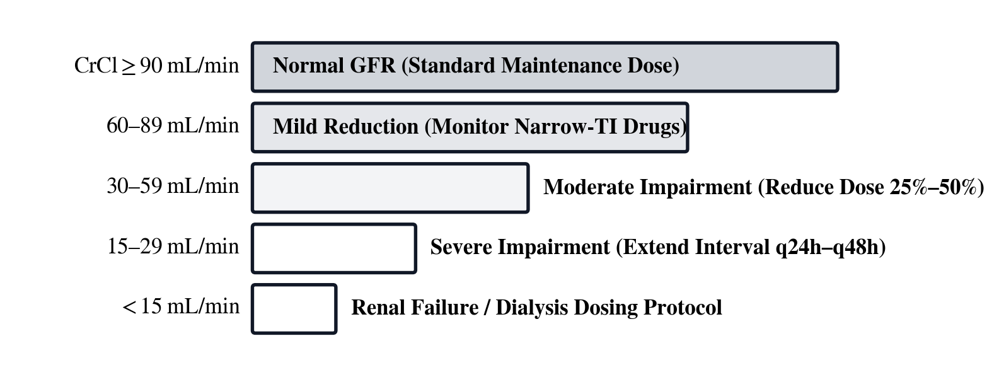
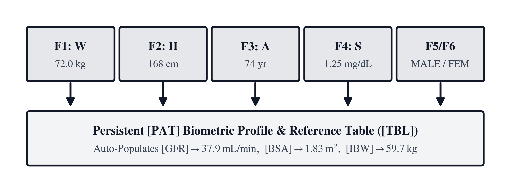
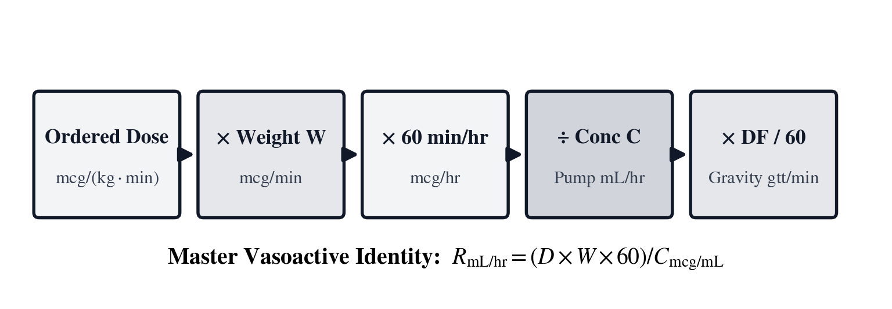
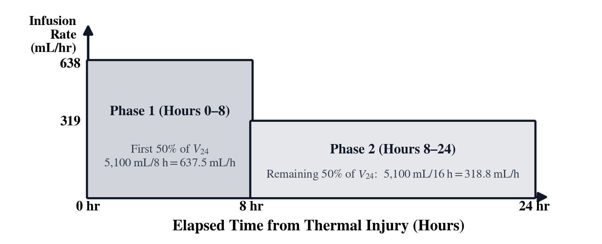
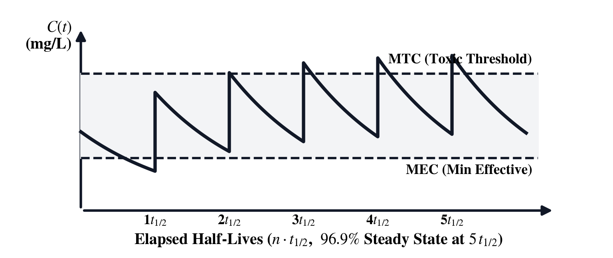
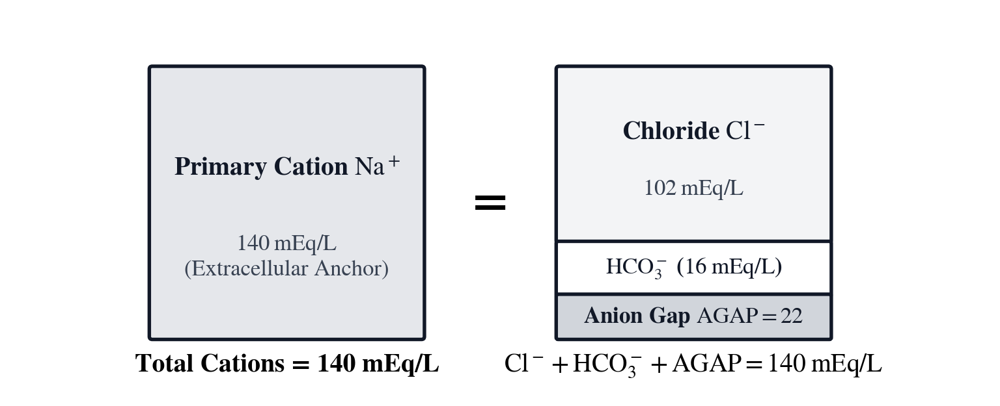

Unit VIII: Clinical Dosing, Renal Clearance & Pharmacokinetics
In 1916, Delafield Du Bois and Eugene F. Du Bois encased hospitalized patients at the Russell Sage Institute of Pathology in New York in tight-fitting paper-and-paraffin molds to measure human skin area directly, demonstrating that basal metabolic rate, extracellular fluid volume, cardiac output, and renal blood flow scale with two-dimensional surface area rather than raw body mass. Seven decades later, in a 1987 letter to the New England Journal of Medicine, biostatistician Robert D. Mosteller replaced their multi-exponent nomogram with a square-root geometric mean of stature and weight ([BSA]). In outpatient primary care, oral medications are routinely prescribed in fixed adult unit doses because common pharmaceuticals possess a wide therapeutic index—a generous physiological margin between the minimum effective concentration required to treat disease and the toxic threshold at which organ damage begins.
In hospital oncology wards, intensive care units, emergency resuscitation bays, and neonatal nurseries, that margin vanishes. Cytotoxic antineoplastic agents, aminoglycoside and glycopeptide antibiotics, antiarrhythmics, and vasoactive catecholamines operate within a narrow therapeutic window where under-dosing by \(15\%\) allows a systemic infection or malignancy to progress, while over-dosing by \(15\%\) can induce irreversible nephrotoxicity, ototoxicity, or ventricular arrhythmias ([f] [QTc]). Because two patients who both weigh \(88\text{ kg}\) on a bed scale can differ substantially in skeletal stature and adipose tissue fraction, clinical pharmacology partitions total weight into Ideal Body Weight ([f] [IBW], formulated by Ben Devine in 1974), Adjusted Body Weight ([g] [ABW]), Body Mass Index ([g] [BMI]), and Body Surface Area ([BSA]), alongside Malcolm Holliday and William Segar's 1957 three-tier pediatric fluid maintenance law ([g] [421]).
Administering an accurate initial loading dose solves only the first half of the clinical dosing problem; recurring maintenance doses must match the speed at which the kidneys and liver clear the compound from blood plasma. In 1953, German pediatrician and pharmacologist Friedrich Hartmut Dost published Der Blutspiegel (The Blood Level), coining the term pharmacokinetics and modeling the human body as a mathematical compartment governed by exponential first-order elimination ([PK]). Notice the cross-domain mathematical identity linking clinical pharmacology to electrical engineering (Unit III, SC-16) and chemical kinetics (Unit VI, SC-60): a drug distributing across an apparent volume of distribution \(V_d\) and cleared by the kidneys at volumetric flow rate \(\text{CL}\) decays as \(C(t) = C_0 e^{-(\text{CL}/V_d)t}\) with biological time constant \(\tau_{\text{bio}} = V_d / \text{CL}\) and half-life \(t_{1/2} = \ln(2)\,V_d / \text{CL}\)—the exact differential equation governing a capacitor \(C_{\text{cap}}\) discharging through a conductance \(G = 1/R\) with time constant \(\tau = R C_{\text{cap}}\). Two decades after Dost, in 1976, Donald Cockcroft and Henry Gault analyzed \(24\text{-hour}\) urine creatinine excretions from \(249\) patients aged \(18\) to \(92\) at Queen Mary Veterans Hospital in Montreal, proving that steady-state serum creatinine must be scaled by chronological age, dosing weight, and biological sex to estimate glomerular filtration as Creatinine Clearance ([GFR]).
To protect bedside nurses, ICU intensivists, and clinical pharmacists from transcription errors and manual algebraic inversion during high-acuity care, the SC-80 is built around three architectural pillars:
1. Configurable Stack Depth ([4-LV], [8-LV], or [INF] via [g] [FLAGS]): Clinicians can work in classic four-register \((X, Y, Z, T)\) RPN mode ([4-LV]), switch to an eight-register stack ([8-LV]), or enable unbounded stack depth ([INF]) when auditing multi-electrolyte blood gases and serial trough levels.
2. Persistent Patient Profile ([PAT]: [W], [H], [A], [S], [MALE]/[FEM]) + Dual-Mode Domain Keys: Rather than treating [DOS], [DRP], [IV], [BSA], or [GFR] as isolated arithmetic keys, the SC-80 anchors every clinical calculation to the active Patient Profile ([PAT]) storing weight \(W\) (\(\text{kg}\)), height \(H\) (\(\text{cm}\)), age \(A\) (\(\text{yr}\)), serum creatinine \(S\) (\(\text{mg/dL}\)), and biological sex ([MALE] or [FEM]). Pressing a clinical key on the stack evaluates the forward equation immediately; opening its Bidirectional Equation Solver Workspace ([BSA], [GFR], [PK], [IV], [DRP], [DOS], [g] [BRN], [ICU]) on a cleared stack ([C]) automatically pre-populates W, H, A, and S onto softkeys [LFU0]–[LFU4] alongside the [PAT] profile softkey so the clinician can solve forward or backward via [XEQ] for any unknown variable—such as back-calculating the delivered microgram-per-kilogram-per-minute dose [D] from an inherited infusion pump rate [R] in [DRP], or solving [PK] backward for systemic clearance [C].
3. Live @MAR Medication Administration Record & Clinical Reference Ledger ([g] [▦]): Pressing [g] [▦] displays the patient's live biometric summary (PAT WT, PAT HT, PAT BSA, PAT IBW, PAT GFR), normal laboratory reference intervals, and the @MAR dose audit log.
| Chapter | Narrative Problem | Mathematical Concepts | Faceplate & Solver Keys |
|---|---|---|---|
| Chapter 22 | Admitting a \(68\)-year-old, \(175\text{ cm}\), \(88\text{ kg}\) patient with serum creatinine \(1.6\text{ mg/dL}\) and adjusting renal antibiotic dosing and 4-2-1 maintenance fluids |
Persistent Patient Profile ([PAT]), Mosteller Body Surface Area, Devine Ideal and \(40\%\) Adjusted Body Weight, Cockcroft–Gault clearance, and Holliday–Segar fluid scaling | [PAT], [BSA], [g] [BMI], [f] [IBW], [g] [ABW], [GFR], [g] [421], [f] [REE], [DOS], [g] [▦] |
| Chapter 23 | Auditing a \(5\ \mu\text{g/kg/min}\) vasopressor order for an \(80\text{ kg}\) ICU patient (\(400\text{ mg}\) in \(250\text{ mL}\)), back-solving an inherited pump rate, and calibrating a \(15\text{ gtt/mL}\) transport drip | Weight-based microgram-to-milligram mass flux, inverse [DRP] pump-to-dose verification, gravity tubing drop factors, Mean Arterial Pressure, and Parkland burn resuscitation | [DRP], [IV], [DOS], [gtt], [g] [MGH], [f] [MAP], [g] [BRN], [ICU] |
| Chapter 24 | Modeling a \(500\text{ mg}\) IV antibiotic (\(V_d = 25\text{ L}\), \(t_{1/2} = 6.0\text{ hr}\)), solving hold time for a toxic trough, and auditing an ICU blood gas, QTc, and helicopter \(\text{O}_2\) tank | One- and two-compartment exponential decay, steady-state accumulation, \(P/F\) ratio and Alveolar–arterial \(\text{O}_2\) gradient, Figge–Fenichel anion gap, corrected \(\text{Na}^+\) and \(\text{Ca}^{2+}\), Bazett \(\text{QT}_c\), and \(\text{O}_2\) tank duration | [PK], [g] [ABG], [g] [AG], [f] [Ca²⁺], [g] [Na⁺], [g] [OSM], [f] [QTc], [f] [O₂] |
Chapter 22: Adjusting the Vancomycin Regimen for Declining Renal Function
During morning infectious-disease rounds on the medical-surgical ward, a \(68\)-year-old male patient standing \(H = 175.0\text{ cm}\) (\(5\text{ ft } 8.9\text{ in}\)) tall and weighing \(W = 88.0\text{ kg}\) is admitted with methicillin-resistant Staphylococcus aureus (MRSA) bacteremia. His morning basic metabolic panel shows that his steady-state serum creatinine has climbed from a baseline of \(1.0\text{ mg/dL}\) to \(S = 1.60\text{ mg/dL}\). Because intravenous vancomycin and aminoglycosides are eliminated almost entirely by glomerular filtration in the kidneys—and accumulate to nephrotoxic and ototoxic plasma concentrations when filtration slows—the clinical pharmacist must store the patient's biometrics in the Patient Profile ([PAT]) and audit his anthropometric compartments and renal clearance ([GFR]) before signing off on the maintenance dosing interval.
Evaluating the patient's chart requires resolving a fundamental tension in clinical anthropometrics. At \(175.0\text{ cm}\) and \(88.0\text{ kg}\) (\(\text{BMI} = 28.73\text{ kg/m}^2\) via [g] [BMI]), the patient carries significant excess adipose mass above his lean skeletal frame. If the pharmacist plugs his raw \(88.0\text{ kg}\) bed-scale weight into the Cockcroft–Gault clearance numerator, the equation treats every kilogram of poorly perfused fat tissue as creatinine-producing skeletal muscle, overestimating his kidney function at \(55.0\text{ mL/min}\). Conversely, partitioning his mass into Devine Ideal Body Weight ([f] [IBW], \(70.46\text{ kg}\)) and \(40\%\) Adjusted Body Weight ([g] [ABW], \(77.48\text{ kg}\)) reveals that his true glomerular filtration has fallen below the \(50.0\text{ mL/min}\) clinical threshold, requiring an extension of his dosing interval.
Before leaving the nursing station, the pharmacist also uses the [GFR] Solver Workspace to determine the exact serum creatinine threshold \(S\) at which this patient's clearance would cross below the \(30.0\text{ mL/min}\) severe renal impairment boundary, and checks the admission orders for a \(26.0\text{ kg}\) pediatric patient in the adjacent step-down unit using [DOS] and Malcolm Holliday and William Segar's 4-2-1 caloric water-maintenance law ([g] [421]).
Anthropometric Mass Partitioning and Body Surface Area
Every clinical dosing protocol on the SC-80 is anchored by the persistent Patient Profile ([PAT]), accessed from the right-hand softkey inside [BSA], [GFR], [DOS], or [DRP]. The [PAT] profile stores patient weight \(W\) (in \(\text{kg}\), [W]), height \(H\) (in \(\text{cm}\), [H]), chronological age \(A\) (in years, [A]), steady-state serum creatinine \(S\) (in \(\text{mg/dL}\), [S]), and biological sex ([MALE] or [FEM]), automatically pre-populating those biometric variables across every clinical Equation Workspace ([BSA], [GFR], [DOS], [DRP], [g] [BRN]).
Mosteller Body Surface Area and Allometric Scaling (BSA)
Two patients who each weigh \(88.0\text{ kg}\) can possess markedly different internal drug distribution volumes. A tall, muscular patient has an expansive vascular bed, high cardiac output, and large hepatic and renal parenchymal mass, whereas a shorter, sedentary patient of the same \(88.0\text{ kg}\) weight carries a substantial fraction of mass as poorly perfused adipose tissue. Because extracellular fluid volume, glomerular filtration, and basal metabolic rate correlate closely with external Body Surface Area ([BSA], \(B\)) in square meters (\(\text{m}^2\), averaging \(1.73\text{ m}^2\) in a reference adult), Robert D. Mosteller (1987) formulated [BSA] from patient height \(H\) (in \(\text{cm}\)) and total body weight \(W\) (in \(\text{kg}\)) using the dimensional normalization constant \(3600 = 60^2\text{ cm}\cdot\text{kg/m}^4\):
Here \(H \cdot W\) forms a two-dimensional product of linear stature and mass, and taking the square root yields a geometric mean whose behavior closely tracks the classical 1916 Du Bois & Du Bois power law (\(B = 0.007184 \, W^{0.425} H^{0.725}\)) across infant, pediatric, and adult populations.
For our \(68\)-year-old male admission measuring \(H = 175.0\text{ cm}\) and weighing \(W = 88.0\text{ kg}\), the product of height and weight is \(175.0 \times 88.0 = 15{,}400\text{ cm}\cdot\text{kg}\). Dividing by \(3600\) gives \(4.27778\text{ m}^4\), and extracting the square root yields a Body Surface Area of \(B = \sqrt{4.27778} = \mathbf{2.0683\text{ m}^2}\).
Devine Ideal Body Weight (IBW) and Forty-Percent Adjusted Body Weight (ABW)
When dosing hydrophilic medications that remain inside lean tissue and extracellular water, using raw total body weight (\(\text{TBW} = W\)) in an overweight patient causes systematic over-dosing. To estimate lean metabolically active mass from skeletal stature alone, Ben Devine (1974) established the Ideal Body Weight ([f] [IBW], in \(\text{kg}\)) equations for adults at least \(60\text{ inches}\) (\(152.4\text{ cm}\), or \(5\text{ feet}\)) tall, where \(H_{\text{in}} = H / 2.54\) is height in inches, \(50.0\text{ kg}\) (male) and \(45.5\text{ kg}\) (female) are the baseline lean weights at \(60\text{ inches}\), and \(2.3\text{ kg/in}\) (\(0.9055\text{ kg/cm}\)) is the linear lean-mass increment per inch above five feet:
When a patient's total body weight \(\text{TBW}\) exceeds \(\text{IBW}\) by more than \(20\%\), polar antibiotics such as aminoglycosides penetrate roughly \(40\%\) into excess adipose extracellular water, which clinical pharmacists capture via Adjusted Body Weight ([g] [ABW], in \(\text{kg}\)) using the empirical adipose distribution factor \(0.40\):

Evaluating Devine's formula for our \(H = 175.0\text{ cm}\) (\(H_{\text{in}} = 175.0 / 2.54 = 68.8976\text{ in}\)) male patient via [f] [IBW] gives \(\text{IBW}_{\text{male}} = 50.0 + 2.3(68.8976 - 60.0) = 50.0 + 20.4646 = \mathbf{70.4646\text{ kg}}\) (whereas a female patient of the same \(175.0\text{ cm}\) stature has \(\text{IBW}_{\text{female}} = 45.5 + 20.4646 = \mathbf{65.9646\text{ kg}}\)). Because his actual weight of \(\text{TBW} = 88.0\text{ kg}\) is \(88.0 / 70.4646 = 1.2489\times\) his ideal weight (\(24.9\%\) above [f] [IBW]), pressing [g] [ABW] adds \(40\%\) of his \(17.5354\text{ kg}\) excess adipose mass to yield an Adjusted Body Weight of \(\text{ABW} = 70.4646 + 0.40(88.0 - 70.4646) = \mathbf{77.4787\text{ kg}}\).
Glomerular Filtration Kinetics and Pediatric Maintenance Scaling
With the patient's lean and adjusted mass compartments established, the pharmacist can translate his morning serum creatinine level into a physiological volumetric clearance rate.
The Cockcroft–Gault Creatinine Clearance Equation (GFR)
Creatinine is a nitrogenous breakdown product of creatine phosphate in skeletal muscle, released into blood plasma at a steady daily rate proportional to muscle mass and filtered freely by the renal glomeruli into the urine. At steady state, urinary creatinine excretion matches muscle creatinine production, making Creatinine Clearance ([GFR], \(C\))—the volume of plasma cleared of creatinine per minute (\(\text{mL/min}\))—inversely proportional to steady-state serum creatinine (\(S\), in \(\text{mg/dL}\)). Because skeletal muscle mass and nephron count decline linearly with adult age (\(A\), in years), Donald Cockcroft and Henry Gault (1976) formulated bedside [GFR] from dosing weight \(W\), using the empirical constant \(72\) in the denominator and a \(0.85\) factor in biological females ([FEM] in [PAT]) to reflect lower average skeletal muscle mass per kilogram:
Hospital pharmacy protocols enforce a three-tier weight selection rule for \(W\) inside the Cockcroft–Gault numerator: underweight patients (\(\text{TBW} < \text{IBW}\)) use actual \(\text{TBW}\); normal-weight patients (\(\text{IBW} \le \text{TBW} \le 1.20\,\text{IBW}\)) use Devine [f] [IBW]; and overweight or obese patients (\(\text{TBW} > 1.20\,\text{IBW}\)) use \(40\%\) Adjusted Body Weight ([g] [ABW]).

In our \(68\)-year-old male patient with \(S = 1.60\text{ mg/dL}\), notice how the age factor \((140 - 68) = 72\) equals the denominator constant \(72\), reducing \(C_{\text{male}}\) to \(W / S\). If a clinician uses unadjusted Total Body Weight (\(W = 88.0\text{ kg}\)), estimated clearance appears to be \(C_{\text{TBW}} = 88.0 / 1.60 = \mathbf{55.00\text{ mL/min}}\). Substituting his obesity-corrected Adjusted Body Weight (\(W = \text{ABW} = 77.4787\text{ kg}\)) lowers estimated glomerular filtration to \(C_{\text{ABW}} = 77.4787 / 1.60 = \mathbf{48.424\text{ mL/min}}\) (and using strict lean [f] [IBW] of \(70.4646\text{ kg}\) gives \(C_{\text{IBW}} = 70.4646 / 1.60 = \mathbf{44.040\text{ mL/min}}\)), confirming that his renal clearance has dropped into the \(< 50\text{ mL/min}\) moderate impairment tier where vancomycin maintenance dosing must be slowed. Conversely, solving the Cockcroft–Gault equation backward via [XEQ] for [S] at \(C = 30.0\text{ mL/min}\) (\(S = (140 - A)W / (72 C) = 77.4787 / 30.0 = \mathbf{2.583\text{ mg/dL}}\)) tells the medical team the exact serum creatinine threshold that marks severe renal impairment for this patient.
Holliday–Segar Pediatric Fluid Maintenance (421), Resting Energy (REE), and Patient-Bound Dosing (DOS)
To replace daily insensible (respiratory and cutaneous) and urinary water losses in hospitalized children and adults, Malcolm Holliday and William Segar (1957) tied basal water requirements to metabolic caloric expenditure across three body-mass tiers, establishing the 4-2-1 Maintenance Fluid Rule ([g] [421]), while across clinical nutrition ([f] [REE]) and veterinary medicine ([g] [VET]), basal caloric demand follows Max Kleiber's \(3/4\)-power allometric Resting Energy Expenditure (in \(\text{kcal/day}\)):
Here the first \(10\text{ kg}\) of body weight demands \(4\text{ mL/kg/hr}\) (up to \(40\text{ mL/hr}\)), the next \(10\text{ kg}\) between \(10\text{ kg}\) and \(20\text{ kg}\) adds \(2\text{ mL/kg/hr}\) (up to \(+20\text{ mL/hr}\)), and each kilogram above \(20\text{ kg}\) adds \(1\text{ mL/kg/hr}\). For the \(W = 26.0\text{ kg}\) pediatric patient on the step-down unit, pressing 26 [g] [421] evaluates the hourly isotonic maintenance fluid rate as \(R_{\text{maint}} = 40 + 20 + 1(26.0 - 20.0) = \mathbf{66.0\text{ mL/hr}}\) (\(1{,}584\text{ mL/day}\)). When prescribing weight-based medications via [DOS] (T = W × D), the SC-80 binds W directly to the active Patient Profile ([PAT]) and logs the verified total dose \(T\) to the @MAR Medication Administration Record in [g] [▦]—and in the [DOS] Solver Workspace, allows the clinician to solve backward via [XEQ] for the delivered \(\text{mg/kg}\) dose intensity \(D = T / W\) when auditing a fixed tablet or vial strength \(T\).
Anthropometric Sizing and Renal Clearance on the Stack and in the Solver Workspace
On the SC-80, storing a patient's admission parameters into the persistent Patient Profile ([PAT]: [W], [H], [A], [S], [MALE]/[FEM]) automatically pre-populates W, H, A, and S into the [BSA], [GFR], [DOS], [DRP], and [g] [BRN] Equation Solver Workspaces while updating the live biometric header in [g] [▦].

| Key / Solver | Mode | Inputs / Softkeys ([LFU0]–[LFU4]) | Governing Expression |
|---|---|---|---|
| [PAT] | Profile Bar | Softkeys: [W] [H] [A] [S] [MALE]/[FEM] [PAT] | Stores persistent patient biometrics (\(W, H, A, S, \text{Sex}\)) and updates [g] [▦] |
| [BSA] | Stack / Solver | Stack: \(Y = H, X = W\) • Solver: [B] [H] [W] [PAT] | \(B = \sqrt{H \cdot W / 3600}\) (H and W pre-populated from [PAT]) |
| [f] [IBW] / [g] [ABW] | Immediate Stack | [f] [IBW]: \(X = H\) (\(\text{cm}\)) • [g] [ABW]: \(Y = \text{IBW}, X = \text{TBW}\) | Devine \(\text{IBW} = 50 + 2.3(H/2.54 - 60)\); \(\text{ABW} = Y + 0.40(X - Y)\) |
| [GFR] | Stack / Solver | Stack: \(Z = A, Y = W, X = S\) • Solver: [C] [A] [W] [S] [PAT] | \(C = (140 - A) \cdot W / (72 \cdot S)\) (A, W, S pre-populated from [PAT]) |
| [g] [421] / [f] [REE] | Immediate Stack | Register \(X\): Patient weight \(W\) (\(\text{kg}\), or uses [PAT] \(W\)) | Holliday–Segar 4-2-1 \(\text{mL/hr}\) ([g] [421]); Kleiber \(70 \cdot W^{0.75}\text{ kcal/day}\) ([f] [REE]) |
| [DOS] | Stack / Solver | Stack: \(Y = W, X = D\) (or \(X = D\) with [PAT]) • Solver: [T] [W] [D] [PAT] | \(T = W \times D\) (W pre-populated from [PAT]; logs to @MAR in [g] [▦]) |
Immediate Stack Trace: Partitioning Mass Compartments and Auditing Renal Clearance
At the bedside computer cart, the pharmacist evaluates Mosteller [BSA] for the \(68\)-year-old male patient (\(H = 175\text{ cm}\), \(W = 88\text{ kg}\)), chains Devine [f] [IBW] and \(40\%\) Adjusted Body Weight ([g] [ABW]), and compares [g] [ABW]-adjusted versus unadjusted [GFR] at \(S = 1.6\text{ mg/dL}\):
| Keystroke | Register T | Register Z | Register Y | Register X | What Happens on the Stack |
|---|---|---|---|---|---|
175 [ENTER] 88 [BSA] |
\(0\) | \(0\) | \(0\) | \(2.0683\) | Compute Mosteller surface area \(B = \sqrt{175 \times 88 / 3600} = 2.0683\text{ m}^2\) |
175 [f] [IBW] |
\(0\) | \(0\) | \(2.0683\) | \(70.4646\) | Lift BSA to Register \(Y\); evaluate Devine \(\text{IBW}_{\text{male}} = 70.4646\text{ kg}\) |
88 [g] [ABW] |
\(0\) | \(0\) | \(2.0683\) | \(77.4787\) | Blend \(\text{IBW}\) (\(Y\)) and \(\text{TBW} = 88\text{ kg}\) (\(X\)) into \(\text{ABW} = 77.4787\text{ kg}\) |
68 [x⇄y] 1.6 [GFR] |
\(2.0683\) | \(2.0683\) | \(2.0683\) | \(48.4242\) | Evaluate ABW-adjusted clearance \(C_{\text{ABW}} = 48.42\text{ mL/min}\) (\(Z=68, Y=77.48, X=1.6\)) |
68 [ENTER] 88 [ENTER] 1.6 [GFR] |
\(48.4242\) | \(48.4242\) | \(48.4242\) | \(55.0000\) | Compare unadjusted total-weight clearance \(C_{\text{TBW}} = 55.00\text{ mL/min}\) |
Bidirectional Solver Workspaces (GFR and DOS): Pre-Populated Patient Biometrics and Inverse Clearance
Now see how the persistent Patient Profile ([PAT]) accelerates clinical what-if analysis in the [GFR] (C = (140-A)W/(72×S)) and [DOS] (T = W × D) Equation Workspaces. When the pharmacist opens [GFR] on a cleared stack ([C] [GFR]) after setting the patient profile via [PAT], the patient's age A = 68, weight W = 77.48 (updated to [g] [ABW]), and serum creatinine S = 1.6 are already bound on the softkey bar. The pharmacist first solves forward via [XEQ] for [C], then stores 30 into [C] and solves backward via [XEQ] on [S] to find the exact serum creatinine level at which this patient would enter severe renal impairment (\(C = 30.0\text{ mL/min}\)), and finally opens [DOS] ([C] [DOS]) to back-calculate the exact \(\text{mg/kg}\) dose intensity [D] delivered by a standard \(T = 1250\text{ mg}\) vancomycin minibag:
| Step & Action | Line 1 Workspace Formula | Softkey Legend Bar ([LFU0]–[LFU4]) | Register X Result & Physical Meaning |
|---|---|---|---|
| [C] [GFR] (open workspace) | GFR: C = (140-A)W/(72×S) |
[C] [A=68] [W=77.48] [S=1.6] [PAT] |
Opens [GFR] workspace pre-populated from Patient Profile [PAT] |
| [XEQ] \(\to\) [C] | C = 48.4242 |
[C=48.42] [A=68] [W=77.48] [S=1.6] [PAT] |
Solves forward for ABW Creatinine Clearance \(C = \mathbf{48.42\text{ mL/min}}\) |
30 \(\to\) [C], [XEQ] \(\to\) [S] |
S = 2.5826 |
[C=30] [A=68] [W=77.48] [S=2.58] [PAT] |
Solves backward for critical creatinine threshold \(S = \mathbf{2.58\text{ mg/dL}}\) |
| [C] [DOS] (open workspace) | DOS: T = W × D |
[T] [W=77.48] [D] [PAT] |
Opens weight-based dosing workspace with W = 77.48 kg pre-bound |
1250 \(\to\) [T], [XEQ] \(\to\) [D] |
D = 16.1335 |
[T=1250] [W=77.48] [D=16.13] [PAT] |
Solves backward for delivered dose intensity \(D = \mathbf{16.13\text{ mg/kg}}\) (within \(15\text{–}20\text{ mg/kg}\)) |
Try It on the Stack
Practice anthropometric partitioning, [PAT]-coupled renal clearance, and inverse dosing audits across these three clinical admissions:
- Oncology Carboplatin & BSA Sizing ([BSA], [f] [IBW] & [g] [ABW]): A female oncology patient measures \(H = 162.56\text{ cm}\) (\(64.0\text{ in}\)) and weighs \(\text{TBW} = 84.0\text{ kg}\). Compute her Mosteller [BSA], her female Devine [f] [IBW] (\(\text{IBW}_{\text{male}} - 4.5\text{ kg}\)), and her \(40\%\) Adjusted Body Weight (
162.56[ENTER]84[BSA]162.56[f] [IBW]4.5[-]84[g] [ABW]). (Verified Register \(X\) results: \(B = \mathbf{1.9476\text{ m}^2}\), \(\text{IBW}_{\text{female}} = \mathbf{54.70\text{ kg}}\), and \(\text{ABW} = \mathbf{66.42\text{ kg}}\).) - Geriatric Female Renal Clearance Comparison ([GFR]): An \(80\)-year-old female patient weighs \(W = 54.0\text{ kg}\) with a seemingly normal serum creatinine of \(S = 1.20\text{ mg/dL}\). In the [GFR] Solver Workspace ([C] [GFR]), store
80in [A],54in [W], and1.2in [S], press [XEQ] \(\to\) [C], and multiply by the \(0.85\) female factor (or toggle [FEM] inside [PAT]). (Verified result: \(C_{\text{female}} = \mathbf{31.875\text{ mL/min}}\).) - Pediatric
4-2-1Fluid Maintenance ([g] [421]) and Amoxicillin Dose Audit ([DOS]): Compute the hourly Holliday–Segar maintenance fluid rate for an \(18.5\text{ kg}\) toddler (18.5[g] [421]), and in the [DOS] Solver Workspace ([C] [DOS]) withW = 18.5 kg, store832.5in [T] and press [XEQ] \(\to\) [D] to solve backward for \(\text{mg/kg/dose}\) when a clinician orders a fixed \(T = 832.5\text{ mg}\) amoxicillin dose. (Verified results: \(R_{\text{maint}} = \mathbf{57.00\text{ mL/hr}}\) and \(D = \mathbf{45.00\text{ mg/kg/dose}}\).)
From admission anthropometrics and renal clearance staging on the ward, we move in Chapter 23 to the intensive care unit at shift change—where weight-based microgram titrations, inverse infusion-pump audits, and gravity tubing drop factors govern continuous vasopressor support.
Chapter 23: Titrating the ICU Norepinephrine Pump at Shift Change
At 7:00 p.m. shift change in the medical intensive care unit, an oncoming critical-care nurse takes handover on an \(W = 80.0\text{ kg}\) patient in distributive septic shock. The bedside peristaltic infusion pump is actively infusing a high-alert central-venous vasopressor at a volumetric flow rate of \(R = 15.0\text{ mL/hr}\) from a pharmacy bag labeled \(400\text{ mg}\) dissolved in \(250\text{ mL}\) of \(5\%\) dextrose in water (\(\text{D}_5\text{W}\), concentration \(C = 1600\ \mu\text{g/mL}\)). Before co-signing the shift-change medication administration record (@MAR), the oncoming nurse must verify the pump in both directions using the [DRP] Equation Workspace (R = D × W × 60 / C): first, given the physician's active order of \(D = 5.0\ \mu\text{g/kg/min}\), confirming the forward pump rate \(R = 15.0\text{ mL/hr}\); and second, when inheriting a running infusion pump in the neighboring trauma bay set to \(R = 27.0\text{ mL/hr}\) on a \(W = 72.0\text{ kg}\) patient from a standard norepinephrine bag (\(4.0\text{ mg}\) in \(250\text{ mL}\), so \(C = 16.0\ \mu\text{g/mL}\)), solving [DRP] backward via [XEQ] on [D] to verify the exact delivered dose rate in \(\mu\text{g/kg/min}\).
Twenty minutes into the shift, the \(80.0\text{ kg}\) patient requires an urgent computed-tomography (CT) angiogram in the basement radiology suite. To prepare a backup manual drip count in case the transport infusion pump battery fails in the elevator, the nurse checks a macro-drip intravenous administration set rated at a Drop Factor of \(DF = 15\text{ gtt/mL}\) alongside a pediatric micro-drip chamber rated at \(60\text{ gtt/mL}\), converting the hourly volumetric flow rate into visible drops per minute ([gtt]).
At the same time, the ICU team monitors the physiological target of that vasopressor titration—maintaining the patient's Mean Arterial Pressure ([f] [MAP]) above \(65\text{ mmHg}\) and tracking Cardiac Output ([ICU])—while sizing a biphasic \(24\text{-hour}\) Parkland crystalloid resuscitation protocol ([g] [BRN]) for a burn admission.
Weight-Based Vasoactive Titrations and Inverse Pump Verification
Critical-care catecholamines and inotropes (norepinephrine, epinephrine, dopamine, dobutamine, and milrinone) have plasma half-lives of only one to two minutes, so they must be infused continuously and titrated to the patient's real-time arterial pressure. Bridging the physician's physiological order (\(D\), in \(\mu\text{g/kg/min}\)) and the mechanical pump's volumetric displacement rate (\(R\), in \(\text{mL/hr}\)) requires a dimensional chain through mass flux and solution concentration.
The Four-Variable Vasoactive Drip Law (DRP)
When a physician orders a continuous weight-based dose \(D\) (in \(\mu\text{g}\cdot\text{kg}^{-1}\cdot\text{min}^{-1}\)) for a patient of body mass \(W\) (in \(\text{kg}\), pre-populated from [PAT]), multiplying \(D \cdot W\) gives the microgram delivery rate per minute (\(\mu\text{g/min}\)), and multiplying by \(60\text{ min/hr}\) yields the hourly microgram flux \(\dot{m}_{\text{mcg/hr}} = 60 D W\) (or dividing by \(1000\ \mu\text{g/mg}\) via the immediate [DRP] stack operator gives the hourly milligram flux \(\dot{m}_{\text{mg/hr}} = 0.060 D W\)). Dividing the hourly microgram flux by the pharmacy bag's microgram concentration \(C = 1000 \cdot (M_{\text{bag,mg}} / V_{\text{bag,mL}})\) (in \(\mu\text{g/mL}\)) yields the Volumetric Infusion Pump Rate \(R\) (in \(\text{mL/hr}\)), while algebraic inversion in the [DRP] Solver Workspace solves backward via [XEQ] for the Delivered Dose Rate \(D\) from an observed pump rate \(R\):

In our first ICU shift-change audit (\(W = 80.0\text{ kg}\), \(D = 5.0\ \mu\text{g/kg/min}\), and \(400\text{ mg}\) in \(250\text{ mL}\) \(\text{D}_5\text{W}\) so \(C = 1600\ \mu\text{g/mL} = 1.60\text{ mg/mL}\)), the hourly drug delivery is \(\dot{m} = 5.0 \times 80.0 \times 60 = 24{,}000\ \mu\text{g/hr} = \mathbf{24.00\text{ mg/hr}}\), and dividing by \(C = 1600\ \mu\text{g/mL}\) sets the volumetric pump to \(R = 24{,}000 / 1600 = \mathbf{15.00\text{ mL/hr}}\). Conversely, when the nurse inherits the running norepinephrine pump in the next bay set to \(R = 27.0\text{ mL/hr}\) for a \(W = 72.0\text{ kg}\) patient with a standard \(4.0\text{ mg} / 250\text{ mL}\) bag (\(C = 16.0\ \mu\text{g/mL}\)), solving [DRP] backward via [XEQ] for [D] gives \(D = (27.0 \times 16.0) / (60 \times 72.0) = 432.0 / 4320.0 = \mathbf{0.100\ \mu\text{g/kg/min}}\).
Gravity Drip Calibration, Arterial Perfusion, and Burn Resuscitation
When transporting unstable patients or operating in field and disaster settings without electronic peristaltic pumps, nurses regulate intravenous flow by counting liquid drops falling through a calibrated drip chamber against the sweep second hand of a watch.
Orifice Drop Factors and Gravity Drip Rate Calibration (gtt)
Every manual intravenous administration set manufactures its drip-chamber orifice to form drops of a fixed volumetric size, specified by the tubing Drop Factor (\(DF_{\text{gtt/mL}}\), in drops per milliliter, \(\text{gtt/mL}\)). Standard adult macro-drip sets deliver \(10\), \(15\), or \(20\text{ gtt/mL}\), whereas pediatric and critical-care micro-drip sets use a fine stainless-steel needle orifice that delivers \(60\text{ gtt/mL}\). Multiplying the hourly volumetric flow rate \(R_{\text{mL/hr}}\) by \(DF_{\text{gtt/mL}}\) gives drops per hour, and dividing by \(60\text{ min/hr}\) yields the Gravity Drip Rate ([gtt], \(R_{\text{gtt/min}}\), in drops per minute):
Notice the geometric elegance of the \(60\text{ gtt/mL}\) micro-drip chamber: when \(DF_{\text{gtt/mL}} = 60\), the ratio \(60 / 60\) equals unity, so \(R_{\text{gtt/min}} = R_{\text{mL/hr}}\) numerically. For our ICU transport running at \(R_{\text{mL/hr}} = 15.00\text{ mL/hr}\), a macro-drip set with \(DF = 15\text{ gtt/mL}\) produces a drip rate via [gtt] of \(R_{\text{gtt/min}} = (15.00 \times 15) / 60 = \mathbf{3.75\text{ gtt/min}}\), whereas switching to a \(60\text{ gtt/mL}\) micro-drip chamber raises the drip frequency to \(\mathbf{15.00\text{ gtt/min}}\) (one drop every \(4.0\text{ seconds}\)).
Mean Arterial Pressure (MAP), Cardiac Output (ICU), and Parkland Burn Crystalloid Resuscitation (BRN)
Vasoactive infusions are titrated to restore organ perfusion pressure and cardiac output, while severe thermal burns require high-volume crystalloid infusions to replace capillary plasma leakage. At resting heart rates, the cardiac ventricles spend roughly one-third of each cardiac cycle in systolic ejection (\(\text{SBP}\), in \(\text{mmHg}\)) and two-thirds in diastolic relaxation (\(\text{DBP}\), in \(\text{mmHg}\)), defining Mean Arterial Pressure ([f] [MAP], in \(\text{mmHg}\)), while multiplying heart rate \(H\) (\(\text{bpm}\)) by stroke volume \(S\) (\(\text{mL/beat}\)) and dividing by \(1000\text{ mL/L}\) gives Cardiac Output ([ICU], \(Q = H \cdot S / 1000\text{ L/min}\)). Simultaneously, Charles Baxter's 1968 Parkland Formula ([g] [BRN]) sizes the total \(24\text{-hour}\) Lactated Ringer's crystalloid resuscitation volume \(V\) (in \(\text{mL}\)) from patient weight \(W\) (pre-populated from [PAT]) and the percentage of Total Body Surface Area burned (\(B = \%\,\text{TBSA}\), entered as a whole number such as \(35\) for \(35\%\)):
Parkland protocol infuses the first half of \(V\) over the first \(8\text{ hours}\) from the time of burn injury (\(R_{1\text{st }8\text{h}} = V / 16\text{ mL/hr}\)) and the second half over the subsequent \(16\text{ hours}\) (\(R_{\text{next }16\text{h}} = V / 32\text{ mL/hr}\)).

When the \(80.0\text{ kg}\) ICU patient's arterial line reads \(106 / 52\text{ mmHg}\) on \(5.0\ \mu\text{g/kg/min}\) of vasopressor, pressing [f] [MAP] shows that his perfusion pressure is \(\text{MAP} = 52 + \frac{1}{3}(106 - 52) = 52 + 18 = \mathbf{70.0\text{ mmHg}}\), safely above the \(65\text{ mmHg}\) autoregulatory threshold. In the adjacent trauma bay, an \(W = 80.0\text{ kg}\) firefighter with second- and third-degree burns across \(B = 35\%\text{ TBSA}\) requires a \(24\text{-hour}\) Parkland volume ([g] [BRN]) of \(V = 4 \times 80.0 \times 35 = \mathbf{11{,}200\text{ mL}}\), setting the volumetric infusion pump ([IV]: R = V / T) to \(5{,}600 / 8 = \mathbf{700.0\text{ mL/hr}}\) for the first \(8\text{ hours}\) and \(5{,}600 / 16 = \mathbf{350.0\text{ mL/hr}}\) for the following \(16\text{ hours}\).
Vasopressor Titrations and Inverse Pump Audits on the Stack and in the Solver Workspace
On the SC-80, vasoactive drip titration ([DRP]), volumetric pump rate ([IV]), gravity drip calibration ([gtt]), Mean Arterial Pressure ([f] [MAP]), Parkland burn resuscitation ([g] [BRN]), and hemodynamic cardiac output ([ICU]) operate both on the RPN stack and in [PAT]-linked Equation Solver Workspaces.
| Key / Solver | Mode | Inputs / Softkeys ([LFU0]–[LFU4]) | Governing Expression |
|---|---|---|---|
| [DRP] | Stack / Solver | Stack: \(Y = D, X = W\) • Solver: [R] [D] [W] [C] [PAT] | Stack: \(\dot{m}_{\text{mg/hr}} = D \cdot W \cdot 60 / 1000\); Solver: \(R = D \cdot W \cdot 60 / C\) |
| [IV] | Stack / Solver | Stack: \(Y = V_{\text{mL}}, X = T_{\text{hr}}\) • Solver: [R] [V] [T] | \(R = V / T \iff T = V / R\) (Volumetric pump rate & bag duration) |
| [gtt] | Immediate Stack | Register \(Y\): Flow rate \(R_{\text{mL/hr}}\), Register \(X\): Drop factor \(DF\) | Gravity drip rate \(R_{\text{gtt/min}} = (Y \cdot X) / 60\) |
| [f] [MAP] | Immediate Stack | Register \(Y\): Systolic \(\text{SBP}\), Register \(X\): Diastolic \(\text{DBP}\) | \(\text{MAP} = X + (Y - X) / 3 = (Y + 2X) / 3\) (\(\text{mmHg}\)) |
| [g] [BRN] | Stack / Solver | Stack: \(Y = W, X = B\) • Solver: [V] [W] [B] | Parkland 24-hr volume \(V = 4 \cdot W \cdot B\) (W pre-populated from [PAT]) |
| [ICU] | Stack / Solver | Stack: \(Y = H_{\text{bpm}}, X = S_{\text{mL}}\) • Solver: [Q] [H] [S] | Cardiac output \(Q = H \cdot S / 1000\) (\(\text{L/min}\)) |
Immediate Stack Trace: Auditing the Vasopressor Pump, Gravity Drip, and Burn Resuscitation
During the shift-change double check, the nurse evaluates the hourly mass flux ([DRP]), divides by the bag concentration (\(400\text{ mg} / 250\text{ mL} = 1.60\text{ mg/mL}\)) to obtain the volumetric pump rate (15.00 mL/hr), calibrates the \(15\text{ gtt/mL}\) macro-drip set ([gtt]), verifies [f] [MAP] at \(106 / 52\text{ mmHg}\), and computes the Parkland burn infusion rates ([g] [BRN], [IV]):
| Keystroke | Register T | Register Z | Register Y | Register X | What Happens on the Stack |
|---|---|---|---|---|---|
5 [ENTER] 80 [DRP] |
\(0\) | \(0\) | \(0\) | \(24.0000\) | Compute vasopressor mass delivery \(\dot{m} = 24.00\text{ mg/hr}\) (\(24{,}000\ \mu\text{g/hr}\)) |
400 [ENTER] 250 [÷] [÷] |
\(0\) | \(0\) | \(0\) | \(15.0000\) | Divide by bag concentration \(1.60\text{ mg/mL}\): pump rate \(R = 15.00\text{ mL/hr}\) |
[ENTER] [ENTER] 15 [gtt] |
\(0\) | \(0\) | \(15.0000\) | \(3.7500\) | Preserve \(R = 15.00\text{ mL/hr}\) in \(Y\) and compute \(15\text{ gtt/mL}\) drip: \(3.75\text{ gtt/min}\) |
106 [ENTER] 52 [f] [MAP] |
\(15\) | \(15.0000\) | \(3.7500\) | \(70.0000\) | Evaluate Mean Arterial Pressure \(\text{MAP} = 52 + (106 - 52)/3 = 70.0\text{ mmHg}\) |
80 [ENTER] 35 [g] [BRN] 16 [IV] |
\(3.75\) | \(3.7500\) | \(70.0000\) | \(700.000\) | Compute \(24\text{-hr}\) Parkland volume (\(11{,}200\text{ mL}\)) and first-\(8\text{-hr}\) rate \(700.0\text{ mL/hr}\) |
Bidirectional Solver Workspaces (DRP and IV): Back-Calculating Delivered Dose from an Inherited Pump
Now see how the [DRP] Equation Workspace (R = D × W × 60 / C) protects patient safety at shift change when a nurse inherits an infusion pump already running at \(R\text{ mL/hr}\). With patient weight W automatically pre-populated from [PAT], the nurse opens [DRP] on a cleared stack ([C] [DRP]), confirms the forward pump rate \(R = 15.0\text{ mL/hr}\) for the \(80.0\text{ kg}\) patient (\(D = 5.0\ \mu\text{g/kg/min}\), \(C = 1600\ \mu\text{g/mL}\)), and then audits the inherited norepinephrine pump running at \(R = 27.0\text{ mL/hr}\) on the \(W = 72.0\text{ kg}\) patient (\(4.0\text{ mg} / 250\text{ mL} \implies C = 16.0\ \mu\text{g/mL}\)) by pressing [XEQ] on [D]:
| Step & Action | Line 1 Workspace Formula | Softkey Legend Bar ([LFU0]–[LFU4]) | Register X Result & Physical Meaning |
|---|---|---|---|
| [C] [DRP] (open workspace) | DRP: R = D × W × 60 / C |
[R] [D] [W=80] [C] [PAT] |
Opens vasoactive drip solver with W = 80 kg pre-bound from [PAT] |
5 \(\to\) [D], 1600 \(\to\) [C], [XEQ] \(\to\) [R] |
R = 15.0000 |
[R=15] [D=5] [W=80] [C=1600] [PAT] |
Solves forward for volumetric pump rate \(R = \mathbf{15.00\text{ mL/hr}}\) |
27 \(\to\) [R], 72 \(\to\) [W], 16 \(\to\) [C] |
DRP: R = D × W × 60 / C |
[R=27] [D] [W=72] [C=16] [PAT] |
Stores inherited pump rate \(R = 27\text{ mL/hr}\), \(W = 72\text{ kg}\), \(C = 16\ \mu\text{g/mL}\) |
| [XEQ] \(\to\) [D] | D = 0.1000 |
[R=27] [D=0.1] [W=72] [C=16] [PAT] |
Solves backward for delivered norepinephrine dose \(D = \mathbf{0.100\ \mu\text{g/kg/min}}\) |
[C] [IV], 250 \(\to\) [V], 27 \(\to\) [R], [XEQ] \(\to\) [T] |
T = 9.2593 |
[R=27] [V=250] [T=9.26] |
Solves [IV] (R = V / T) backward for time until bag empty \(T = \mathbf{9.26\text{ hr}}\) |
Try It on the Stack
Verify these three critical-care infusion and hemodynamic calculations on the stack and in the [DRP] / [IV] Solver Workspaces:
- Inverse Epinephrine Pump Audit ([DRP] Solver): An oncoming ICU nurse inherits an epinephrine infusion running at \(R = 21.0\text{ mL/hr}\) on a \(W = 70.0\text{ kg}\) patient from a standard bag of \(4.0\text{ mg}\) in \(250\text{ mL}\) (\(C = 16.0\ \mu\text{g/mL}\)). In the [DRP] Solver Workspace ([C] [DRP]), store
21in [R],70in [W], and16in [C], and press [XEQ] \(\to\) [D] to solve backward for the delivered dose rate. (Verified result: \(D = \mathbf{0.080\ \mu\text{g/kg/min}}\).) - Dobutamine Inotropic Infusion and Macro-Drip Count ([DRP] & [gtt]): A \(W = 90.0\text{ kg}\) heart-failure patient receives dobutamine at \(D = 7.5\ \mu\text{g/kg/min}\) from a \(500\text{ mg}\) in \(250\text{ mL}\) bag (\(C = 2000\ \mu\text{g/mL} = 2.0\text{ mg/mL}\)). Compute the pump rate in \(\text{mL/hr}\) and the gravity drop rate through a \(20\text{ gtt/mL}\) tubing set (
7.5[ENTER]90[DRP]2[÷]20[gtt]). (Verified Register \(X\) results: \(R = \mathbf{20.25\text{ mL/hr}}\) and \(R_{\text{gtt}} = \mathbf{6.75\text{ gtt/min}}\).) - Vancomycin Minibag Duration ([IV]) and Mean Arterial Pressure ([f] [MAP]): In the [IV] Solver Workspace ([C] [IV],
R = V / T), store minibag volume250\(\to\) [V] (\(\text{mL}\)) and maximum safe vancomycin infusion rate166.67\(\to\) [R] (\(\text{mL/hr}\)), press [XEQ] \(\to\) [T] to solve backward for minimum infusion time in hours, and check [f] [MAP] for an arterial pressure of \(92 / 50\text{ mmHg}\) (92[ENTER]50[f] [MAP]). (Verified results: \(T = \mathbf{1.50\text{ hr}}\) (\(90\text{ min}\)) and \(\text{MAP} = \mathbf{64.00\text{ mmHg}}\).)
Having mastered continuous intravenous pump titrations and hemodynamic monitoring in Chapter 23, we turn in Chapter 24 to therapeutic drug monitoring, arterial blood gas and electrolyte interpretation, and aeromedical transport oxygen budgeting.
Chapter 24: Tracking the Trough Across Five Half-Lives
Twelve hours after receiving an initial \(500\text{ mg}\) intravenous bolus of a renally cleared antibiotic regimen, an ICU patient's blood is drawn for therapeutic drug monitoring (TDM) alongside an arterial blood gas (ABG), a 12-lead electrocardiogram (ECG), and a comprehensive metabolic panel. Pharmacokinetic population modeling for this patient estimates an Apparent Volume of Distribution of \(V = 25.0\text{ L}\) and a biological Elimination Half-Life of \(T_{1/2} = 6.0\text{ hours}\) ([PK]). Before ordering the next \(500\text{ mg}\) maintenance dose on an every-\(12\text{-hour}\) (\(\tau = 12.0\text{ hr}\)) schedule, the clinical pharmacist must calculate the initial post-bolus peak concentration \(C_0\), the first-order elimination rate constant \(K\), the \(12\text{-hour}\) pre-dose trough concentration \(C(12)\), and the steady-state peak and trough levels that will be reached after five half-lives (\(30.0\text{ hours}\)) of repeated dosing—and when a neighboring renal-failure patient returns a supratherapeutic vancomycin trough of \(C_0 = 32.0\text{ mg/L}\) (\(K = 0.05776\text{ hr}^{-1}\), \(T_{1/2} = 12.0\text{ hr}\)), solve the exponential decay equation backward for the exact hold time \(T\) required for the serum level to decay safely to \(C = 15.0\text{ mg/L}\).
Simultaneously, the patient's chemistry panel, arterial blood gas, and ECG return from the laboratory with \([\text{Na}^+] = 140\text{ mEq/L}\), \([\text{Cl}^-] = 102\text{ mEq/L}\), \([\text{HCO}_3^-] = 14\text{ mEq/L}\) ([g] [AG]), measured total calcium \(\text{Ca}_{\text{meas}} = 7.6\text{ mg/dL}\) with severe hypoalbuminemia of \(\text{Albumin} = 2.0\text{ g/dL}\) ([f] [Ca²⁺]), blood glucose \(350\text{ mg/dL}\) ([g] [Na⁺], [g] [OSM]), inspired oxygen \(F_i\text{O}_2 = 0.40\) with arterial \(P_a\text{O}_2 = 110\text{ mmHg}\) and \(P_a\text{CO}_2 = 28\text{ mmHg}\) ([g] [ABG]), and a measured ECG \(\text{QT}\) interval of \(420\text{ ms}\) at heart rate \(96\text{ bpm}\) ([f] [QTc]). Finally, before transferring the patient by helicopter for a \(T = 70.0\text{-minute}\) flight using an E-cylinder pressurized to \(P = 1950\text{ psi}\) ([f] [O₂]), the respiratory therapist must solve for the maximum safe oxygen flow rate \(F\) in \(\text{L/min}\).
Multi-Compartment Elimination and Steady-State Superposition
In linear pharmacokinetics, the body is modeled either as a single well-mixed fluid volume \(V\) (one-compartment model) or as a central vascular compartment \(V_1\) exchanging drug reversibly with a peripheral tissue compartment \(V_2\) before renal and hepatic elimination:
For glycopeptides and aminoglycosides sampled after the rapid \(\alpha\)-distribution phase (\(30\text{–}60\text{ minutes}\) post-infusion) has equilibrated, plasma concentrations follow a single terminal exponential governed by the elimination rate constant \(K = \beta\) and apparent volume of distribution \(V\) ([PK]).
Exponential Decay, Rate Constants, and Elimination Half-Life (PK)
When an intravenous bolus dose of mass \(D\) (in \(\text{mg}\)) mixes across the Apparent Volume of Distribution (\(V\), in liters \(\text{L}\)) cleared at volumetric Systemic Clearance rate \(C_{\text{CL}}\) (in \(\text{L/hr}\)), it establishes an initial peak concentration \(C_0 = D / V\) (in \(\text{mg/L}\)). Because the rate of drug elimination \(-dM/dt = C_{\text{CL}} \cdot C(t)\) is proportional to instantaneous concentration \(C(t)\), plasma concentration decays exponentially according to the first-order Elimination Rate Constant (\(K\), in \(\text{hr}^{-1}\)) and Elimination Half-Life (\(T_{1/2}\), in hours), where \(\ln(2) \approx 0.693147\) ([PK]):

In our ICU patient receiving a \(D = 500\text{ mg}\) intravenous antibiotic bolus into \(V = 25.0\text{ L}\) with \(T_{1/2} = 6.0\text{ hr}\), the initial peak plasma concentration is \(C_0 = 500 / 25.0 = \mathbf{20.00\text{ mg/L}}\). Pressing 6 [PK] divides \(\ln(2) = 0.693147\) by \(T_{1/2} = 6.0\text{ hr}\) to give a first-order elimination rate constant of \(K = 0.693147 / 6.0 = \mathbf{0.11552\text{ hr}^{-1}}\) and a systemic clearance of \(C_{\text{CL}} = K \cdot V = 0.11552 \times 25.0 = \mathbf{2.8881\text{ L/hr}}\). At \(T = 12.0\text{ hr}\) (\(2.0\) half-lives), the plasma concentration decays to \(C(12) = 20.00 \times e^{-0.11552 \times 12.0} = 20.00 \times (0.5)^2 = \mathbf{5.00\text{ mg/L}}\). Conversely, for the neighboring patient whose vancomycin trough returned supratherapeutic at \(C_0 = 32.0\text{ mg/L}\) with \(T_{1/2} = 12.0\text{ hr}\) (\(K = \ln(2)/12 = 0.057762\text{ hr}^{-1}\)), solving the decay law backward for the hold time \(T\) needed to reach a safe target trough of \(C = 15.0\text{ mg/L}\) gives \(T = \ln(32.0 / 15.0) / 0.057762 = 0.75769 / 0.057762 = \mathbf{13.117\text{ hr}}\) (or at \(T_{1/2} = 6.0\text{ hr}\), \(K = 0.11552\text{ hr}^{-1} \implies T = \mathbf{6.559\text{ hr}}\)).
Superposition and Steady-State Accumulation Across Five Half-Lives
When the same maintenance dose \(D\) is repeated at a fixed dosing interval \(\tau\) (in hours), each new dose adds \(C_0 = D / V\) on top of the residual trough remaining from all prior doses. After \(n\) doses, the finite geometric series \(\sum_{j=0}^{n-1} r^j = (1 - r^n)/(1 - r)\) with per-interval survival ratio \(r = e^{-K \tau} = 2^{-\tau / T_{1/2}}\) converges as \(n \to \infty\) to the Steady-State Accumulation Factor \(R_{\text{acc}}\), determining the Steady-State Peak (\(C_{\text{ss,max}}\)), Steady-State Trough (\(C_{\text{ss,min}}\)), and Average Steady-State Concentration (\(C_{\text{ss,avg}}\), which equals \(\text{AUC}_{0\to\tau} / \tau\)):
During repeated maintenance dosing or a constant-rate infusion, plasma levels climb to \(1 - 2^{-n}\) of steady state: \(50\%\) after \(1\,T_{1/2}\), \(75\%\) after \(2\,T_{1/2}\), \(87.5\%\) after \(3\,T_{1/2}\), \(93.75\%\) after \(4\,T_{1/2}\), and \(96.875\%\) (clinical steady state) after \(5\,T_{1/2}\) (\(5 \times 6.0 = 30.0\text{ hours}\)). For our \(D = 500\text{ mg}\) regimen given every \(\tau = 12.0\text{ hr}\) (\(2.0\) half-lives, so \(e^{-K\tau} = 0.25\)), the accumulation factor is \(R_{\text{acc}} = 1 / (1 - 0.25) = \mathbf{1.3333}\), stabilizing at \(C_{\text{ss,max}} = 20.00 \times 1.3333 = \mathbf{26.67\text{ mg/L}}\) and \(C_{\text{ss,min}} = 26.67 \times 0.25 = \mathbf{6.67\text{ mg/L}}\).
Serum Electroneutrality, Pulmonary Gas Exchange, and Oxygen Transport
Beyond drug kinetics, critical-care physiology rests on four conservation and equilibrium laws mapped directly to the SC-80 keypad: serum electroneutrality ([g] [AG]), macromolecular and osmotic ion corrections ([f] [Ca²⁺], [g] [Na⁺], [g] [OSM]), alveolar-arterial gas exchange and cardiac repolarization ([g] [ABG], [f] [QTc]), and compressed-gas cylinder depletion ([f] [O₂]).
Anion Gap (AG), Corrected Calcium (Ca²⁺), and Hyperglycemic Sodium (Na⁺)
Subtracting measured extracellular anions (\([\text{Cl}^-] + [\text{HCO}_3^-]\)) from sodium (\([\text{Na}^+]\)) defines the Serum Anion Gap ([g] [AG], normally \(8\text{–}12\text{ mEq/L}\)), which James Figge, Thomas Fenichel, and Vladimir Jabor (1998) corrected for hypoalbuminemia by adding \(2.5\text{ mEq/L}\) per \(1.0\text{ g/dL}\) albumin deficit below \(4.0\text{ g/dL}\), alongside Albert Winter's (1967) respiratory compensation law:

Simultaneously, Robert Payne's (1973) Albumin-Corrected Calcium ([f] [Ca²⁺]) restores protein-bound calcium in hypoalbuminemia, while Marvin Katz's (1973) Hyperglycemic Sodium Correction ([g] [Na⁺]) accounts for osmotic water translocated from the intracellular space by elevated extracellular glucose (\(\text{Glc}\), in \(\text{mg/dL}\)), and [g] [OSM] evaluates effective serum osmolality (\(2[\text{Na}^+] + \text{Glc}/18\)):
For our ICU patient (\(\text{Na}^+ = 140\), \(\text{Cl}^- = 102\), \(\text{HCO}_3^- = 14\text{ mEq/L}\), \(\text{Ca}_{\text{meas}} = 7.6\text{ mg/dL}\), \(\text{Alb} = 2.0\text{ g/dL}\), and \(\text{Glc} = 350\text{ mg/dL}\)), the uncorrected anion gap ([g] [AG]) is \(\text{AG} = 140 - 116 = \mathbf{24.0\text{ mEq/L}}\) and the albumin-corrected gap is \(\text{AG}_{\text{corr}} = 24.0 + 2.5(2.0) = \mathbf{29.0\text{ mEq/L}}\); Payne's calcium ([f] [Ca²⁺]) is \(\text{Ca}_{\text{corr}} = 7.6 + 0.8(2.0) = \mathbf{9.20\text{ mg/dL}}\); and Katz's corrected sodium ([g] [Na⁺]) is \(\text{Na}_{\text{corr}} = 140 + 0.016(250) = \mathbf{144.0\text{ mEq/L}}\).
Arterial Blood Gas Oxygenation (ABG), Bazett QTc, and Transport Oxygen (O₂)
In mechanical ventilation and ARDS staging, [g] [ABG] computes the Horowitz Oxygenation Index (\(P_a\text{O}_2 / F_i\text{O}_2\) ratio) from arterial oxygen tension \(P_a\text{O}_2\) in Register \(Y\) and inspired oxygen fraction \(F_i\text{O}_2\) in Register \(X\) (where \(P/F < 300\text{ mmHg}\) indicates acute lung injury), while the Alveolar Gas Equation computes alveolar oxygen tension \(P_A\text{O}_2\) at barometric pressure \(P_{\text{atm}} = 760\text{ mmHg}\), \(37^\circ\text{C}\) water-vapor pressure \(P_{\text{H}_2\text{O}} = 47\text{ mmHg}\) (\(P_{\text{atm}} - P_{\text{H}_2\text{O}} = 713\text{ mmHg}\)), and respiratory quotient \(R = 0.80\), and subtracts measured arterial \(P_a\text{O}_2\) to obtain the A–a Gradient (\(\Delta P_{A-a}\text{O}_2\)). Alongside blood gas analysis, Henry Cuthbert Bazett's (1920) Corrected QT Interval ([f] [QTc], in \(\text{ms}\)) normalizes ventricular repolarization time \(\text{QT}_{\text{ms}}\) to a \(60\text{ bpm}\) (\(RR = 1.0\text{ s}\)) reference via \(\sqrt{RR} = \sqrt{60 / \text{HR}}\), and the Compressed Oxygen Cylinder Law ([f] [O₂]) relates remaining tank pressure \(P_{\text{psi}}\) (above the \(200\text{ psi}\) safe residual cushion) and cylinder conversion factor \(k_{\text{tank}}\) (\(0.28\text{ L/psi}\) for a portable E-cylinder; \(3.14\text{ L/psi}\) for a bulk H-cylinder) to flow rate \(F\) (\(\text{L/min}\)) and transport duration \(T\) (\(\text{min}\)):
At \(F_i\text{O}_2 = 0.40\), \(P_a\text{CO}_2 = 28\text{ mmHg}\), and \(P_a\text{O}_2 = 110\text{ mmHg}\), pressing 110 [ENTER] 0.40 [g] [ABG] gives a Horowitz \(P/F\) ratio of \(\mathbf{275.0\text{ mmHg}}\), while alveolar oxygen is \(P_A\text{O}_2 = 0.40(713) - 28/0.8 = 285.2 - 35.0 = 250.2\text{ mmHg}\), giving \(\Delta P_{A-a}\text{O}_2 = 250.2 - 110 = \mathbf{140.2\text{ mmHg}}\). On the ECG monitor (\(\text{QT} = 420\text{ ms}\) at \(\text{HR} = 96\text{ bpm}\), so \(RR = 60/96 = 0.625\text{ s}\)), pressing 420 [ENTER] 96 [f] [QTc] gives \(\text{QT}_c = 420 / \sqrt{0.625} = \mathbf{531.26\text{ ms}}\) (alerting the team to pause QT-prolonging antiarrhythmics). Finally, because \(T\) and \(F\) are reciprocally symmetric in \(T \cdot F = (P_{\text{psi}} - 200) \times 0.28\), for the \(T = 70.0\text{-minute}\) helicopter transfer with an E-cylinder at \(P_{\text{psi}} = 1950\text{ psi}\), pressing 1950 [ENTER] 70 [f] [O₂] directly yields the maximum safe oxygen flow rate \(F = (1950 - 200) \times 0.28 / 70.0 = 490.0 / 70.0 = \mathbf{7.00\text{ L/min}}\).
Compartment Kinetics, Blood Gases, and Transport Oxygen on the Stack and in the Solver Workspace
On the SC-80, pharmacokinetic elimination ([PK]), acid-base and electrolyte corrections ([g] [AG], [f] [Ca²⁺], [g] [Na⁺], [g] [OSM]), cardiopulmonary indices ([g] [ABG], [f] [QTc], [ICU]), and oxygen tank budgeting ([f] [O₂]) execute both on the RPN stack and in bidirectional Equation Solver Workspaces.
| Key / Solver | Mode | Inputs / Softkeys ([LFU0]–[LFU2]) | Governing Expression |
|---|---|---|---|
| [PK] | Stack / Solver | Stack: \(X = T_{1/2}\) or \(K\) • Solver: [T] [V] [C] | Stack: \(K = \ln(2) / T_{1/2} \iff T_{1/2} = \ln(2) / K\); Solver: \(T_{1/2} = 0.693147 \cdot V / C_{\text{CL}}\) |
| [g] [AG] / [f] [Ca²⁺] / [g] [Na⁺] | Immediate Stack | [g] [AG]: \(Y = \text{Na}^+, X = \text{Cl}^- + \text{HCO}_3^-\) • [f] [Ca²⁺]: \(Y = \text{Ca}, X = \text{Alb}\) • [g] [Na⁺]: \(Y = \text{Na}, X = \text{Glc}\) | \(\text{AG} = Y - X\); \(\text{Ca}_{\text{corr}} = Y + 0.8(4 - X)\); \(\text{Na}_{\text{corr}} = Y + 0.016(X - 100)\) |
| [g] [ABG] / [f] [QTc] | Immediate Stack | [g] [ABG]: \(Y = P_a\text{O}_2, X = F_i\text{O}_2\) • [f] [QTc]: \(Y = \text{QT}_{\text{ms}}, X = \text{HR}_{\text{bpm}}\) | Horowitz \(P/F = Y / X\); Bazett \(\text{QT}_c = Y / \sqrt{60/X}\) |
| [f] [O₂] | Immediate Stack | Register \(Y\): Pressure \(P_{\text{psi}}\), Register \(X\): Flow \(F_{\text{L/min}}\) (or duration \(T_{\text{min}}\)) | E-cylinder \(T = (P - 200) \times 0.28 / F \iff F = (P - 200) \times 0.28 / T\) |
Immediate Stack Trace: Antibiotic Trough Decay, Electrolyte Corrections, and QTc
To evaluate the \(500\text{ mg}\) IV bolus in \(V = 25.0\text{ L}\) with \(T_{1/2} = 6.0\text{ hr}\) at \(T = 12.0\text{ hr}\) and at steady state (\(\tau = 12.0\text{ hr}\)), followed by the Figge–Fenichel Anion Gap ([g] [AG]), Payne Corrected Calcium ([f] [Ca²⁺]), Katz Corrected Sodium ([g] [Na⁺]), and Bazett [f] [QTc], the clinician chains:
| Keystroke | Register T | Register Z | Register Y | Register X | What Happens on the Stack |
|---|---|---|---|---|---|
500 [ENTER] 25 [÷] 6 [PK] |
\(0\) | \(0\) | \(20.0000\) | \(0.1155\) | Peak \(C_0 = 20.0\text{ mg/L}\) in \(Y\); rate constant \(K = \ln(2)/6 = 0.11552\text{ hr}^{-1}\) in \(X\) |
12 [×] [+/-] [g] [eˣ] [×] 0.75 [÷] |
\(0\) | \(0\) | \(0\) | \(6.6667\) | First trough \(C(12) = 5.0\text{ mg/L}\) scaled by \(1/(1-0.25) \to C_{\text{ss,min}} = 6.67\text{ mg/L}\) |
140 [ENTER] 102 [ENTER] 14 [+] [g] [AG] 5 [+] |
\(6.6667\) | \(6.6667\) | \(6.6667\) | \(29.0000\) | Uncorrected \(\text{AG} = 24.0\) plus \(+5.0\) albumin correction \(\to \text{AG}_{\text{corr}} = 29.0\text{ mEq/L}\) |
7.6 [ENTER] 2.0 [f] [Ca²⁺] |
\(6.6667\) | \(6.6667\) | \(29.0000\) | \(9.2000\) | Payne Albumin-Corrected Calcium \(\text{Ca}_{\text{corr}} = 7.6 + 0.8(4 - 2) = 9.20\text{ mg/dL}\) |
420 [ENTER] 96 [f] [QTc] |
\(29\) | \(29.0000\) | \(9.2000\) | \(531.2627\) | Bazett corrected interval \(\text{QT}_c = 420 / \sqrt{60/96} = 531.26\text{ ms}\) |
Bidirectional Solver Workspaces (PK and ICU) and Inverse Oxygen Budgeting (O₂)
Now see how the [PK] and [ICU] Equation Workspaces and [f] [O₂] solve critical clinical constraints backward. First, when a patient with \(V = 25.0\text{ L}\) and \(T_{1/2} = 6.0\text{ hr}\) (\(K = 0.11552\text{ hr}^{-1}\)) has a supratherapeutic trough of \(C_0 = 32.0\text{ mg/L}\), the pharmacist opens [PK] ([C] [PK]) to solve via [XEQ] for systemic clearance \(C_{\text{CL}} = 2.888\text{ L/hr}\) and determines the exact hold time \(T = \ln(32.0/15.0)/0.11552 = \mathbf{6.559\text{ hr}}\) required before resuming dosing. Second, before loading the patient into the helicopter for a \(T = 70.0\text{-minute}\) flight with an E-cylinder at \(P = 1950\text{ psi}\), the respiratory therapist evaluates 1950 [ENTER] 70 [f] [O₂] to find the maximum safe oxygen flow rate \(F = \mathbf{7.00\text{ L/min}}\), and uses the [ICU] Solver Workspace (Q = H × S / 1000) to solve backward for stroke volume [S] given cardiac output \(Q = 5.28\text{ L/min}\) at heart rate \(H = 96\text{ bpm}\):
| Step & Action | Line 1 Workspace Formula | Softkey Legend Bar ([LFU0]–[LFU2]) | Register X Result & Physical Meaning |
|---|---|---|---|
| [C] [PK] (open workspace) | PK: T = .69315 × V / C |
[T] [V] [C] | Opens compartment pharmacokinetic workspace |
6 \(\to\) [T], 25 \(\to\) [V], [XEQ] \(\to\) [C] |
C = 2.8881 |
[T=6] [V=25] [C=2.89] |
Solves backward for systemic clearance \(C_{\text{CL}} = \mathbf{2.888\text{ L/hr}}\) |
[C] 32 [ENTER] 15 [÷] [f] [LN] 6 [PK] [÷] |
(Normal Stack) | (Standard Spine) | Solves exponential decay backward for hold time \(T = \mathbf{6.559\text{ hr}}\) |
1950 [ENTER] 70 [f] [O₂] |
(Normal Stack) | (Standard Spine) | Solves E-cylinder law for maximum safe oxygen flow rate \(F = \mathbf{7.00\text{ L/min}}\) |
[C] [ICU], 5.28 \(\to\) [Q], 96 \(\to\) [H], [XEQ] \(\to\) [S] |
S = 55.0000 |
[Q=5.28] [H=96] [S=55] |
Solves [ICU] (Q = H × S / 1000) backward for stroke volume \(S = \mathbf{55.0\text{ mL/beat}}\) |
Try It on the Stack
Reinforce your command of compartment pharmacokinetics, blood-gas homeostasis, and transport oxygen budgeting with these three clinical problems:
- Gentamicin Half-Life ([PK]) and Supratherapeutic Hold Time: A septic patient has \(V = 18.0\text{ L}\) and renal clearance \(C_{\text{CL}} = 3.00\text{ L/hr}\). In the [PK] Solver Workspace ([C] [PK]), store
18in [V] and3in [C] and press [XEQ] \(\to\) [T] to solve for half-life \(T_{1/2}\), then find the hold time required for a toxic serum concentration of \(C_0 = 14.0\text{ mg/L}\) to decay to \(C = 2.0\text{ mg/L}\) (14[ENTER]2[÷] [f] [LN]4.1589[PK] [÷]). (Verified results: \(T_{1/2} = \mathbf{4.1589\text{ hr}}\), \(K = \mathbf{0.1667\text{ hr}^{-1}}\), and \(T_{\text{hold}} = \mathbf{11.676\text{ hr}}\).) - Diabetic Ketoacidosis Anion Gap ([g] [AG]) and Hyperglycemic Sodium ([g] [Na⁺]): A patient in diabetic ketoacidosis presents with \([\text{Na}^+] = 131\text{ mEq/L}\), \([\text{Cl}^-] = 95\text{ mEq/L}\), \([\text{HCO}_3^-] = 8\text{ mEq/L}\), and blood glucose \(\text{Glc} = 600\text{ mg/dL}\). Compute the Serum Anion Gap (
131[ENTER]95[ENTER]8[+] [g] [AG]) and Katz Corrected Sodium (131[ENTER]600[g] [Na⁺]). (Verified Register \(X\) results: \(\text{AG} = \mathbf{28.00\text{ mEq/L}}\) and \(\text{Na}_{\text{corr}} = \mathbf{139.0\text{ mEq/L}}\).) - Blood Gas Oxygenation ([g] [ABG]) and Transport Cylinder Reserve ([f] [O₂]): Evaluate the Horowitz \(P/F\) oxygenation index (
85[ENTER]0.50[g] [ABG]) and A–a oxygen gradient for a ventilated patient on \(F_i\text{O}_2 = 0.50\) with \(P_a\text{CO}_2 = 40\text{ mmHg}\) and \(P_a\text{O}_2 = 85\text{ mmHg}\) (0.50[ENTER]713[×]40[ENTER]0.8[÷] [-]85[-]), and compute the E-cylinder duration at \(P = 1700\text{ psi}\) and \(F = 10.0\text{ L/min}\) (1700[ENTER]10[f] [O₂]). (Verified results: \(P/F = \mathbf{170.0\text{ mmHg}}\), \(\Delta P_{A-a}\text{O}_2 = \mathbf{221.5\text{ mmHg}}\), and \(T = \mathbf{42.00\text{ min}}\).)
With clinical anthropometrics, vasoactive infusion titrations, and compartment pharmacokinetics established on the SC-80, we turn in Unit IX: Quantitative Finance, Fixed-Income Valuation & Six Sigma Quality to our ninth and final domain instrument—the SC-95—where compound discounting, derivative pricing, and statistical process capability govern capital and manufacturing quality.